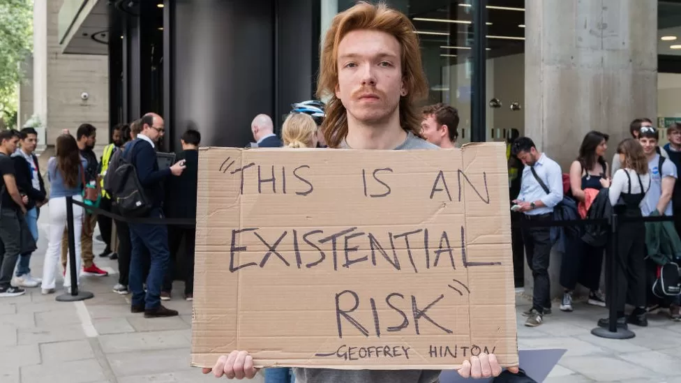
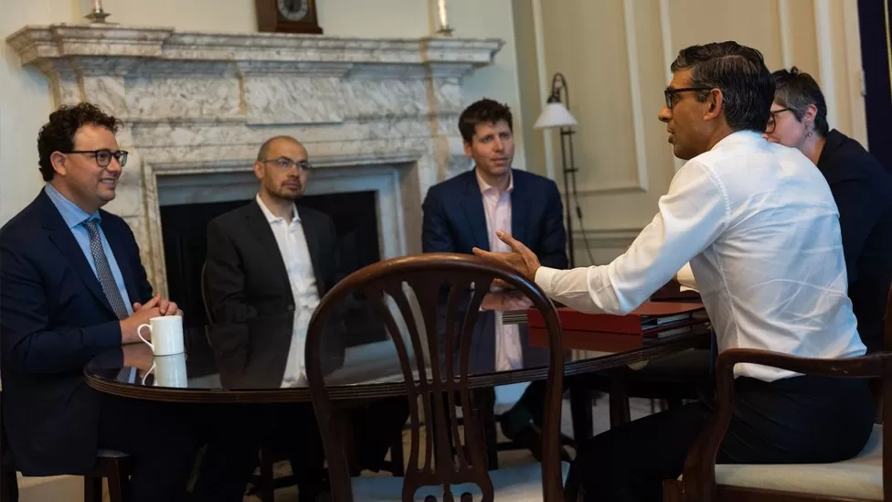
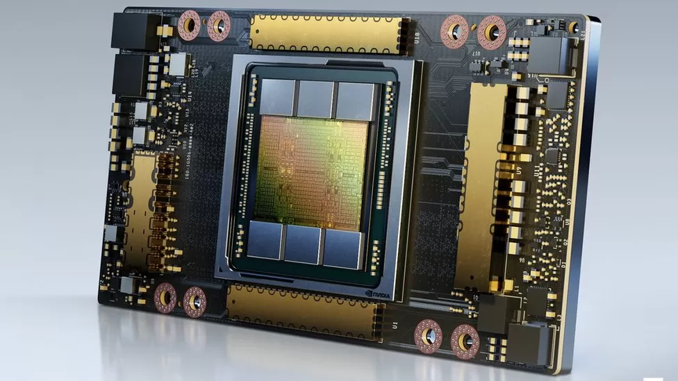
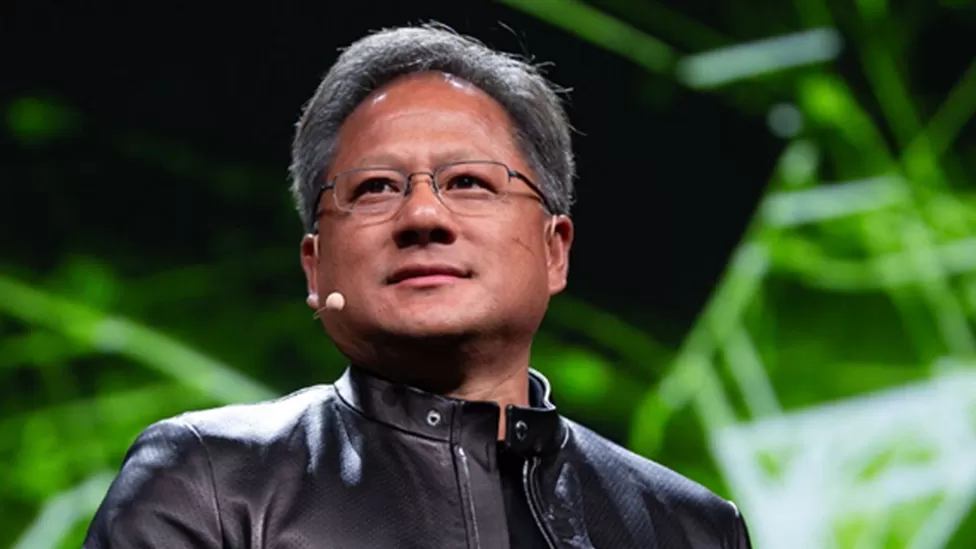

photo:Sam Altman.[CEO,chatgpt]
The boss of the company behind ChatGPT has said it has no plans to leave Europe. OpenAI CEO Sam Altman U-turned on a threat he made earlier this week to leave the block if it becomes too hard to comply with upcoming laws on artificial intelligence (AI). The EU's planned legislation could be the first to legislate on AI which the tech boss said was "over-regulating". But he backtracked after wide-spread coverage of his comments. "We are excited to continue to operate here and of course have no plans to leave," he tweeted. The proposed law could require generative AI companies to reveal which copyrighted material had been used to train their systems to create text and images. Many in the creative industries accuse AI companies of using the work of artists, musicians and actors to train systems to imitate their work. But Mr Altman is worried it would be technically impossible for OpenAI to comply with some of the AI Act's safety and transparency requirements, according to Time magazine.
photo:A protester
At an event at University College London on Wednesday, Mr Altman added he was optimistic AI could create more jobs and reduce inequality. He also met Prime Minister Rishi Sunak and the heads of AI companies DeepMind and Anthropic to discuss the technology's risks - from disinformation to national security and even "existential threats" - and the voluntary actions and regulation required to manage them. Some experts fear super-intelligent AI systems could threaten humanity's existence. But Mr Sunak said AI could "positively transform humanity" and "deliver better outcomes for the British public, with emerging opportunities in a range of areas to improve public services".
photo:G7 meeting
At the G7 summit in Hiroshima, the leaders of the US, UK, Germany, France, Italy, Japan and Canada agreed creating "trustworthy" AI must be "an international endeavour". And before any EU legislation comes into effect, the European Commission aims to develop an AI pact with Google's parent company, Alphabet. International cooperation is vital to regulating AI, according to EU industry chief Thierry Breton, who met with Google chief executive Sundar Pichai in Brussels. "Sundar and I agreed that we cannot afford to wait until AI regulation actually becomes applicable - and to work together with all AI developers to already develop an AI pact on a voluntary basis ahead of the legal deadline," Mr Breton said. Silicon Valley veteran, author and O'Reilly Media founder Tim O'Reilly said the best start would be mandating transparency and building regulatory institutions to enforce accountability. "AI fearmongering, when combined with its regulatory complexity, could lead to analysis paralysis," he said. "Companies creating advanced AI must work together to formulate a comprehensive set of metrics that can be reported regularly and consistently to regulators and the public, as well as a process for updating those metrics as new best practices emerge."
Edited by:Nasir Hasan [Source:BBC]
photo:Elon Musk.[Owner,Neuralink]
The billionaire's Neuralink implant company wants to help restore people's vision and mobility by connecting brains with computers. It says it does not have immediate plans to start recruiting participants. Mr Musk's previous ambitions to begin tests came to nothing. The regulator itself is yet to comment. An earlier bid by Neuralink to win FDA approval was rejected on safety grounds, according to a report in March by the Reuters news agency that cited multiple current and former employees. What is Neuralink? Neuralink hopes to use its microchips to treat conditions such as paralysis and blindness, and to help certain disabled people use computers and mobile technology. The chips - which have been tested in monkeys - are designed to interpret signals produced in the brain and relay information to devices via Bluetooth. Experts have cautioned that Neuralink's brain implants will require extensive testing to overcome technical and ethical challenges if they are to become widely available. Mr Musk has also previously suggested that the proposed technology could help ease concerns about humans being displaced by AI. Announcing Thursday's news on Twitter, Neuralink talked of an "important first step that will one day allow our technology to help many people". The approval was "the result of incredible work by the Neuralink team in close collaboration with the FDA", it said. The firm promised more information "soon" on plans to sign up trial participants. Its website promises that "safety, accessibility and reliability" are all priorities during its engineering process. The company - which was co-founded by Mr Musk in 2016 - has repeatedly overestimated the speed at which it can execute its plans. Its initial aim was to start planting chips in human brains in 2020, in order to honour a pledge made the year before. It later vowed to get started in 2022. The business was dealt another setback in December last year, after reportedly coming under investigation for alleged animal welfare violations in its work. It earlier denied similar claims. Its announcement on FDA approval for human tests follows recent news of a similar breakthrough involving brain implants by Swiss researchers.
video:A paralysed man from the Netherlands was able to walk simply by thinking about it - thanks to a system of implants which wirelessly transmit his thoughts to his legs and feet.
Edited by:Nasir Hasan.[Source:BBC]
The surge was sparked by its latest quarterly results which were released late on Wednesday. The company said it was raising production of chips to meet "surging demand". Nvidia has come to dominate the market for chips used in artificial intelligence (AI) systems. Interest in that sector reached frenzied levels after ChatGPT went public last November, which sent a jolt well beyond the technology industry. From helping with speeches, to computer coding and cooking, ChatGPT has proved to be a wildly popular application of AI. What is ChatGPT? But all that would not be possible without powerful computer hardware - in particular computer chips from California-based Nvidia. Originally known for making the type of computer chips that process graphics, particularly for computer games, Nvidia hardware underpins most AI applications today. "It is the leading technology player enabling this new thing called artificial intelligence," says Alan Priestley, a semiconductor industry analyst at Gartner. "What Nvidia is to AI is almost like what Intel was to PCs," adds Dan Hutcheson, an analyst at TechInsights. ChatGPT was trained using 10,000 of Nvidia's graphics processing units (GPUs) clustered together in a supercomputer belonging to Microsoft.
photo:Super Power Chip.
"It is one of many supercomputers - some known publicly, some not - that have been built with Nvidia GPUs for a variety of scientific as well as AI use cases," says Ian Buck, general manager and vice president of accelerated computing at Nvidia. Nvidia has about 95% of the GPU market for machine learning, noted a recent report from CB Insights. Its AI chips, which it also sells in systems designed for data centres, cost roughly $10,000 (£8,000) each, though its latest and most powerful version sells for far more. So how did Nvidia become such a central player in the AI revolution? In short, a bold bet on its own technology plus some good timing.
photo:Jensen Huang.[CEO,Nvidia]
Jensen Huang, now the chief executive of Nvidia, was one of its founders back in 1993. Then, Nvidia was focused on making graphics better for gaming and other applications. In 1999 it developed GPUs to enhance image display for computers. GPUs excel at processing many small tasks simultaneously (for example handling millions of pixels on a screen) - a procedure known as parallel processing. In 2006, researchers at Stanford University discovered GPUs had another use - they could accelerate maths operations, in a way that regular processing chips could not. It was at that moment that Mr Huang took a decision crucial to the development of AI as we know it. He invested Nvidia's resources in creating a tool to make GPUs programmable, thereby opening up their parallel processing capabilities for uses beyond graphics. That tool was added to Nvida's computer chips. For computer games players it was a capability they didn't need, and probably weren't even aware of, but for researchers it was a new way of doing high performance computing on consumer hardware. It was that capability that helped sparked early breakthroughs in modern AI. In 2012 Alexnet was unveiled - an AI that could classify images. Alexnet was trained using just two of Nvidia's programmable GPUs. The training process took only a few days, rather than the months it could have taken on a much larger number of regular processing chips. The discovery - that GPUs could massively accelerate neural network processing - began to spread among computer scientists, who started buying them to run this new type of workload. "AI found us," says Mr Buck. Nvidia pressed its advantage by investing in developing new kinds of GPUs more suited to AI, as well as more software to make it easy to use the technology. A decade, and billions of dollars later, ChatGPT emerged - an AI that can give eerily human responses to questions.
photo:In 2021 Metaphysic made headlines with its Tom Cruise deep fakes.
AI start-up Metaphysic creates photorealistic videos of celebrities and others using AI techniques. Its Tom Cruise deep fakes created a stir in 2021. To both train and then run its models it uses hundreds of Nvidia GPUs, some purchased from Nvidia and others accessed through a cloud computing service. "There are no alternatives to Nvidia for doing what we do," says Tom Graham, its co-founder and chief executive. "It is so far ahead of the curve." Yet while Nvidia's dominance looks assured for now, the longer term is harder to predict. "Nvidia is the one with the target on its back that everybody is trying to take down," notes Kevin Krewell, another industry analyst at TIRIAS Research. Other big semiconductor companies provide some competition. AMD and Intel are both better known for making central processing units (CPUs), but they also make dedicated GPUs for AI applications (Intel only recently joined the fray). Google has its tensor processing units (TPUs), used not only for search results but also for certain machine-learning tasks, while Amazon has a custom-built chip for training AI models. Microsoft is also reportedly developing an AI chip, and Meta has its own AI chip project.
Edited by:Nasir Hasan.[Source:BBC]